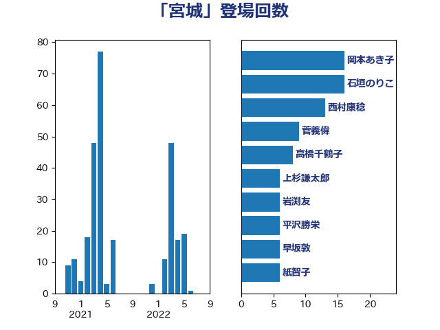

単語「宮城」

| 岡本あき子 | 立憲民主党 | 16 回 |
| 石垣のりこ | 立憲民主党 | 16 回 |
| 西村康稔 | 自由民主党 | 13 回 |
| 菅義偉 | 自由民主党 | 9 回 |
| 高橋千鶴子 | 日本共産党 | 8 回 |
| 上杉謙太郎 | 自由民主党 | 6 回 |
| 岩渕友 | 日本共産党 | 6 回 |
| 平沢勝栄 | 自由民主党 | 6 回 |
| 早坂敦 | 日本維新の会 | 6 回 |
| 紙智子 | 日本共産党 | 6 回 |
| 和田政宗 | 自由民主党 | 5 回 |
| 平木大作 | 公明党 | 4 回 |
| 東徹 | 日本維新の会 | 4 回 |
| 横沢高徳 | 立憲民主党 | 4 回 |
| 清水貴之 | 日本維新の会 | 4 回 |
| 若松謙維 | 公明党 | 4 回 |
| 進藤金日子 | 自由民主党 | 4 回 |
| 階猛 | 立憲民主党 | 4 回 |
| 井上哲士 | 日本共産党 | 3 回 |
| 冨樫博之 | 自由民主党 | 3 回 |
| 山添拓 | 日本共産党 | 3 回 |
| 杉久武 | 公明党 | 3 回 |
| 玄葉光一郎 | 立憲民主党 | 3 回 |
| 田村憲久 | 自由民主党 | 3 回 |
| 笠井亮 | 日本共産党 | 3 回 |
| 野田佳彦 | 立憲民主党 | 3 回 |
| 鎌田さゆり | 立憲民主党 | 3 回 |
| 長浜博行 | 無所属 | 3 回 |
| 三浦靖 | 自由民主党 | 2 回 |
| 中島克仁 | 立憲民主党 | 2 回 |
| 亀岡偉民 | 自由民主党 | 2 回 |
| 安江伸夫 | 公明党 | 2 回 |
| 小沢雅仁 | 立憲民主党 | 2 回 |
| 小熊慎司 | 立憲民主党 | 2 回 |
| 山井和則 | 立憲民主党 | 2 回 |
| 新垣邦男 | 立憲民主党 | 2 回 |
| 梅村みずほ | 日本維新の会 | 2 回 |
| 津島淳 | 自由民主党 | 2 回 |
| 緑川貴士 | 立憲民主党 | 2 回 |
| 萩生田光一 | 自由民主党 | 2 回 |
| 藤原崇 | 自由民主党 | 2 回 |
| 里見隆治 | 公明党 | 2 回 |
| 金城泰邦 | 公明党 | 2 回 |
| 長友慎治 | 国民民主党 | 2 回 |
| 上田清司 | 国民民主党 | 1 回 |
| 井上英孝 | 日本維新の会 | 1 回 |
| 伊藤俊輔 | 立憲民主党 | 1 回 |
| 古賀友一郎 | 自由民主党 | 1 回 |
| 吉田忠智 | 立憲民主党 | 1 回 |
| 塩村あやか | 立憲民主党 | 1 回 |
| 大口善徳 | 公明党 | 1 回 |
| 大島敦 | 立憲民主党 | 1 回 |
| 大石あきこ | れいわ新選組 | 1 回 |
| 室井邦彦 | 日本維新の会 | 1 回 |
| 宮本周司 | 自由民主党 | 1 回 |
| 小池晃 | 日本共産党 | 1 回 |
| 小泉進次郎 | 自由民主党 | 1 回 |
| 小渕優子 | 自由民主党 | 1 回 |
| 山下貴司 | 自由民主党 | 1 回 |
| 山崎誠 | 立憲民主党 | 1 回 |
| 山田美樹 | 自由民主党 | 1 回 |
| 庄子賢一 | 公明党 | 1 回 |
| 斉藤鉄夫 | 公明党 | 1 回 |
| 杉尾秀哉 | 立憲民主党 | 1 回 |
| 松本尚 | 自由民主党 | 1 回 |
| 柚木道義 | 立憲民主党 | 1 回 |
| 梶山弘志 | 自由民主党 | 1 回 |
| 池畑浩太朗 | 日本維新の会 | 1 回 |
| 浅野哲 | 国民民主党 | 1 回 |
| 渡辺周 | 立憲民主党 | 1 回 |
| 田名部匡代 | 立憲民主党 | 1 回 |
| 田村まみ | 国民民主党 | 1 回 |
| 石井正弘 | 自由民主党 | 1 回 |
| 福山哲郎 | 立憲民主党 | 1 回 |
| 竹内真二 | 公明党 | 1 回 |
| 篠原豪 | 立憲民主党 | 1 回 |
| 細野豪志 | 自由民主党 | 1 回 |
| 羽田次郎 | 立憲民主党 | 1 回 |
| 蓮舫 | 立憲民主党 | 1 回 |
| 西岡秀子 | 国民民主党 | 1 回 |
| 西村智奈美 | 立憲民主党 | 1 回 |
| 西田昭二 | 自由民主党 | 1 回 |
| 西銘恒三郎 | 自由民主党 | 1 回 |
| 赤嶺政賢 | 日本共産党 | 1 回 |
| 赤澤亮正 | 自由民主党 | 1 回 |
| 足立康史 | 日本維新の会 | 1 回 |
| 足立敏之 | 自由民主党 | 1 回 |
| 近藤和也 | 立憲民主党 | 1 回 |
| 酒井庸行 | 自由民主党 | 1 回 |
| 金子恵美 | 立憲民主党 | 1 回 |
| 高橋光男 | 公明党 | 1 回 |
| 高階恵美子 | 自由民主党 | 1 回 |